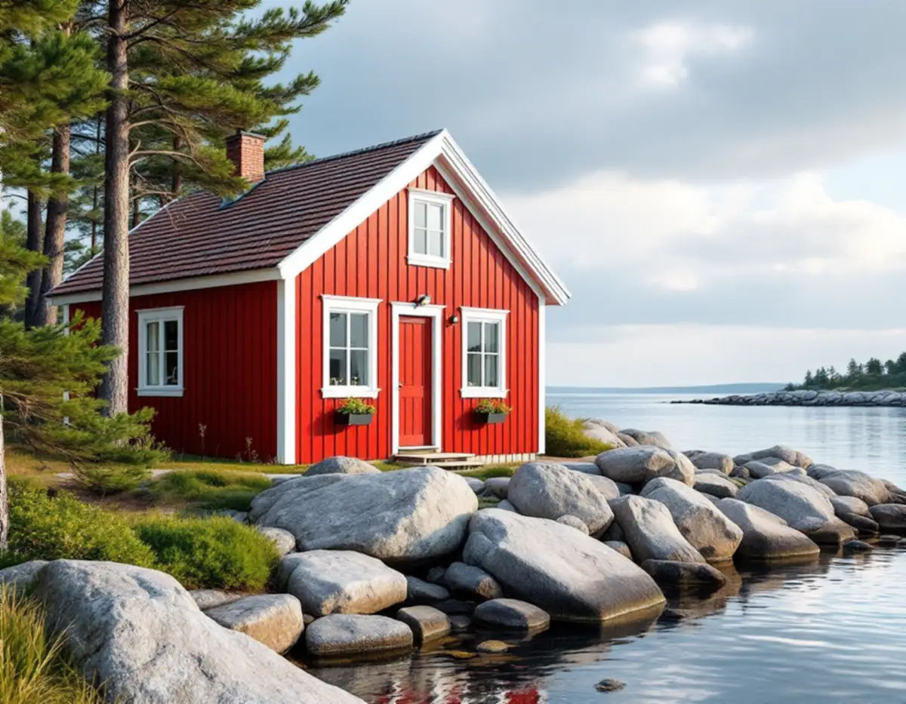
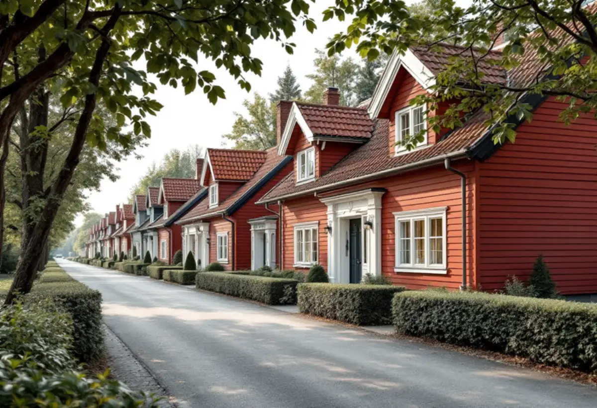

Platsbesök
Vi går runt huset, bedömer varje fasad för sig och gör skrapprov för att se vilken färgtyp som sitter på.
På Värmdö slits en fasad ojämnt. Sidan mot fjärden får sol, regn och blåst, medan sidan mot skogen står fuktig i skugga. I Gustavsberg tillkommer bruksgatornas enhetliga kulörer. Geal Entreprenad AB tar målningsuppdrag på hela Värmdö, med gratis platsbesök och skriftligt kostnadsförslag.

Många hus på Värmdö står på uddar, öar och berg vid öppet vatten. Vattnet är bräckt – enligt SMHI 6–9 gram salt per kilo i Egentliga Östersjön – men det är vind, regn och sol från öppet vatten som sliter mest på en målad fasad. Riksantikvarieämbetet skriver att söderfasader behöver målas om oftare än norrfasader och att fönster, vattbräder, trappor och räcken bör underhållsmålas löpande, eftersom de är hårdast utsatta.
På ett hus i skogen eller i en nordsluttning är problemet i stället påväxt. Där står fasaden fuktig länge efter regn och behöver tvättas och få torka ordentligt innan den målas. Myndigheten noterar att zinkvitt i linoljefärg har en mögelhämmande effekt, och att en mindre mängd bör ingå i all linoljefärg för utomhusbruk.
Därför delas arbetet ofta upp. Mot vattnet kan det vara dags för en hel ommålning, medan skogssidan klarar sig med tvätt och bättring några år till. Myndigheten beskriver just bättringsmåleri som lämpligt även utomhus, eftersom olika byggnadsdelar slits olika fort.

Gustavsberg är riksintresse för kulturmiljövården. Bland det som pekas ut finns bruksgatorna från 1800-talets senare hälft och bostadshusens enhetliga volymer, material och färgsättning inom varje bebyggelsegrupp. En antikvarisk konsekvensanalys som kommunen lät göra 2023 beskriver Grindstugatan som ett representativt exempel: de flesta husen är från 1870-talet och har sadeltak, faluröda fasader med fjällpanel och vita knutar.
Analysen återger också hur en äldre detaljplan skyddar en byggnad i området, där underhåll ska ske med ursprungliga material och kulörer. Det visar vad som väger tungt här. En ny kulör på ett hus längs bruksgatorna bryter mot hela gatans bild, även om ändringen i sig ser liten ut.
Riksantikvarieämbetet påpekar att ljusa slamfärger varken visuellt eller tekniskt är lika tåliga som mörkare, och att en slamfärgsmålad yta bara ska målas om med slamfärg. På de faluröda husen är det alltså oftast både kulören och färgtypen som bör behållas.
Värmdö kommun skriver att det inte krävs bygglov för fasadändring, nytt tak eller nya fönster på en- och tvåbostadshus. Men om fastigheten ligger i ett kulturhistoriskt särskilt värdefullt område eller om byggnaden själv är särskilt värdefull krävs alltid bygglov för fasadändringar som ommålning. Enligt kommunens sida om ändringarna i plan- och bygglagen gäller lovplikten också inom riksintressen för kulturmiljövården, och kulturmiljökartan visar vilka fastigheter som berörs.
Plan- och bygglagen ställer dessutom krav på alla hus. Ett byggnadsverk ska hållas i vårdat skick och underhållet ska anpassas till omgivningens karaktär och byggnadens värden. Ändringar ska göras varsamt, med hänsyn till husets karaktärsdrag. För en målare innebär det att börja med vad huset redan har, inte med en ny färgkarta.
Kommunen har tusentals fritidshusfastigheter där allt fler bor permanent, och de första områdena som ska anpassas för helårsboende får detaljplan och kommunalt vatten och avlopp. När ett sådant hus byggs till eller tilläggsisoleras får det ofta ny panel på en del av fasaden, medan resten har decennier av färglager.
Då lönar det sig att måla hela huset i samma omgång, med samma färgtyp på gammal och ny panel. Ny obehandlad panel behöver grundas ordentligt, och den äldre delen kan behöva skrapas ner till fast underlag. Mer om ombyggnaden finns under tillbyggnad, och för takets del hos takrenovering på Värmdö.
Vi går runt huset, bedömer varje fasad för sig och gör skrapprov för att se vilken färgtyp som sitter på.
Vi kontrollerar kulturmiljökartan och detaljplanen om kulören ska ändras.
Hel ommålning och bättring prissätts per fasad, så att du kan välja vad som görs nu.
Tvätt av påväxt, skrapning, byte av skadat trä och kittning av fönster.
Strykningarna görs under säsongen och i torrt väder, med de torktider färgtypen kräver.
Vi går igenom resultatet tillsammans och bättrar där det behövs.
Rotavdraget gäller både för permanentbostad och för fritidshus som du äger. Skatteverket räknar målning av fasader, fönster, väggar, tak och golv samt tapetsering som rotarbete, men inte målning av staket och murar. Avdraget är 30 procent av arbetskostnaden, högst 50 000 kr per person och år, och ROT och RUT får tillsammans vara högst 75 000 kr.
Färgen räknas som material och ger inget avdrag. Geal drar avdraget direkt på fakturan.
Priset styrs av hur många fasader som behöver en hel ommålning, hur mycket lös färg och påväxt som måste bort och hur mycket trä som behöver bytas. Hus på berg och uddar kan kräva mer ställning, och öar utan bilväg kräver transport av material. Platsbesöket är gratis och du får ett skriftligt kostnadsförslag.
Fasad, fönster och invändig målning.
Målare i Stockholm →Takbyte, takbesiktning och plåtarbeten.
Takläggare på Värmdö →Skärgård, vind och fritidshus.
Takrenovering på Värmdö →Brunnsvatten, salt och eget avlopp.
Badrumsrenovering på Värmdö →Byggrätt, PFO-områden och strandskydd.
Byggföretag på Värmdö →Fritidshus som blir permanentbostäder.
Golvläggare på Värmdö →Fritidshus, eget avlopp och Gustavsberg.
Köksrenovering på Värmdö →Plåttak och beslag på Värmdö.
Plåtslagare på Värmdö →Fritidshus som blir helårshus.
Snickare på Värmdö →